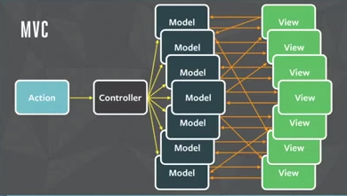

1、MVC (Model(模型)-View(视图)-Controller(控制器))
2、MVP (Model(模型)-View(视图)-Presenter(中介者))
3、MVVM (Model(模型)-View(视图)-ViewModel(视图模型))
过去，这些模式已经被大量用于构建桌面和服务器端的应用程序，但它只是在最近一些年才被应用到JavaScript。
MVC除了把应用程序分成View、Model层，还额外的加了一个Controller层，它的职责为进行Model和View之间的协作（路由、输入预处理等）的应用逻辑；Model进行处理业务逻辑。
Model、View、Controller三个层次的依赖关系如下：
大体流程：
Controller和View都依赖Model层，Controller和View可以互相依赖。在一些资料Controller和View之间的依赖关系可能不一样，有些是单向依赖，有些是双向依赖，这个其实关系不大，最终它们的依赖关系都是为了把处理用户行为触发的事件处理权交给Controller。
1、View是把控制权交移给Controller，Controller执行应用程序相关的应用逻辑（对来自View数据进行预处理、决定调用哪个Model的接口等等）。
2、Controller操作Model，Model执行业务逻辑对数据进行处理。但不会直接操作View，可以说它是对View无知的。
3、View和Model的同步消息是通过观察者模式进行，而同步操作是由View自己请求Model的数据然后对视图进行更新。
需要特别注意的是MVC模式的精髓在于第三点：Model的更新是通过观察者模式告知View的，具体表现形式可以是Pub/Sub或者是触发Events。而网上很多对于MVC的描述都没有强调这一点。通过观察者模式的好处就是：不同的MVC三角关系可能会有共同的Model，一个MVC三角中的Controller操作了Model以后，两个MVC三角的View都会接受到通知，然后更新自己。保持了依赖同一块Model的不同View显示数据的实时性和准确性。
把业务逻辑和展示逻辑分离，模块化程度高。且当应用逻辑需要变更的时候，不需要变更业务逻辑和展示逻辑，只需要Controller换成另外一个Controller (观察者模式可以做到多视图同时更新)
Controller测试困难。因为视图同步操作是由View自己执行，而View只能在有UI的环境下运行。在没有UI环境下对Controller进行单元测试的时候，应用逻辑正确性是无法验证的：Model更新的时候，无法对View的更新操作进行断言。 View无法组件化。View是强依赖特定的Model的，如果需要把这个View抽出来作为一个另外一个应用程序可复用的组件就困难了。因为不同程序的的Domain Model是不一样的
与服务端显著的差别来自于controller：在后台应用中，用户和服务器之间的交互是通过http请求实现的，因此后台controller的表达形式是http请求的handler，并且和router（定义网站的url规则）紧密相关; 而前端应用中，用户和网页之间的交互主要是通过操作事件（例如点击鼠标、键盘输入等）实现的，因此前端的controller这里可以简单理解为各种交互事件的handler。
轻量级，支持jquery，自带路由，对象化视图，强大的sync机制减少页面大小从而加快页面显示。
国产货，众联无限开发的一套独立自研的前端MVC框架。他的概念很有意思，就是将后端开发语言，如Java，的概念模拟应用到前端。有class有继承，能实现模板和应用绑定。
优点：概念模拟，学习成本低，上手快。封装很薄，扩展性和兼容性都很好 缺点：相关的组件和第三方资源比较少，依赖jquery和seajs
----------------分割线------------------------
不同人、前后端对于 MVC 的理解有巨大的差异
这些基本的还是要了解的
mvc：实际上后端开发过程中是v-c-m-c-v，v和m并没有关系
DEMO:
var Myapp = {};
var Model = function(){
this.data = {};
this.getData = function(){
return this.data;
}
this.setData = function(obj){
this.data = obj;
}
}
var View = function(){
var _model;
this.click = function(){
var _controller = new Controller();
_model = _controller.render('MVC');
var content = _model.getData().content;
document.querySelector('#content').innerHTML = content;
console.log('<p>' + content + ' </p>');
}
}
var Controller = function(){
this.render = function(content){
var model = new Model();
//... my logis
model.setData({content: content});
return model;
}
}
var _view = new View();
_view.click();var myapp = {};
myapp.Model = function() {
var val = 0;
this.add = function(v) {
if (val < 100) val += v;
};
this.sub = function(v) {
if (val > 0) val -= v;
};
this.getVal = function() {
return val;
};
var self = this,
views = [];
this.register = function(view) {
views.push(view);
};
this.notify = function() {
for(var i = 0; i < views.length; i++) {
views[i].render(self);
}
};
};
myapp.View = function(controller) {
var $num = $('#num'),
$incBtn = $('#increase'),
$decBtn = $('#decrease');
this.render = function(model) {
$num.text(model.getVal());
};
$incBtn.click(controller.increase);
$decBtn.click(controller.decrease);
};
myapp.Controller = function() {
var model = null,
view = null;
this.init = function() {
/* 初始化 */
model = new myapp.Model();
view = new myapp.View(this);
/* View向Model注册，当Model更新就会去通知View */
model.register(view);
model.notify();
};
/* 让Model更新数值并通知View更新视图 */
this.increase = function() {
model.add(1);
model.notify();
};
this.decrease = function() {
model.sub(1);
model.notify();
};
};
var controller = new myapp.Controller();
controller.init();
模型-视图-展示器(MVP)是MVC设计模式的一个衍生模式,它专注于提升展现逻辑。它来自于上个世纪九十年代早期的一个叫做Taligent的公司.而MVC和MVP的目标都直指对整个多组件关注点的分离,它们之间有一些基础上的不同。
MVP 模式将 Controller 改名为 Presenter，同时改变了通信方向。
MVP打破了View原来对于Model的依赖，其余的依赖关系和MVC模式一致。
图示：

1、各部分之间的通信，都是双向的。
2.、View 与 Model 不发生联系，都通过 Presenter 传递。
3、View 非常薄，不部署任何业务逻辑，称为"被动视图"（Passive View），即没有任何主动性，而 Presenter非常厚，所有逻辑都部署在那里。
和MVC模式一样，用户对View的操作都会从View交移给Presenter。Presenter会执行相应的应用程序逻辑，并且对Model进行相应的操作；而这时候Model执行完业务逻辑以后，也是通过观察者模式把自己变更的消息传递出去，但是是传给Presenter而不是View。Presenter获取到Model变更的消息以后，通过View提供的接口更新界面。
关键点：
1、View不再负责同步的逻辑，而是由Presenter负责。Presenter中既有应用程序逻辑也有同步逻辑。
2、View需要提供操作界面的接口给Presenter进行调用。（关键）
对比在MVC中，Controller是不能操作View的，View也没有提供相应的接口；而在MVP当中，Presenter可以操作View，View需要提供一组对界面操作的接口给Presenter进行调用；Model仍然通过事件广播自己的变更，但由Presenter监听而不是View。
便于测试。Presenter对View是通过接口进行，在对Presenter进行不依赖UI环境的单元测试的时候。可以通过Mock一个View对象，这个对象只需要实现了View的接口即可。然后依赖注入到Presenter中，单元测试的时候就可以完整的测试Presenter应用逻辑的正确性。
View可以进行组件化。在MVP当中，View不依赖Model。这样就可以让View从特定的业务场景中脱离出来，可以说View可以做到对业务完全无知。它只需要提供一系列接口提供给上层操作。这样就可以做到高度可复用的View组件。
Presenter中除了应用逻辑以外，还有大量的View->Model，Model->View的手动同步逻辑，造成Presenter比较笨重，维护起来会比较困难。
MVP 的架构模式是有两种情况的，一种叫做 supervising controller 另一种是 passive view，后者由于 vm 之间没有任何的联系，所以能够与 MVC 之间比较容易的区分。
DEMO:
var Model = function(){
this.data ={};
this.getData = function(){
return this.data;
}
this.setData = function(obj){
this.data = obj;
}
}
var View = function(){
this.show = function(desc){
console.log('<p>' + desc + '</p>');
}
this.click = function(){
var _controller = new Presenter(this);
_controller.render('MVC');
}
}
var Presenter = function(view){
var _model = new Model();
var _view = view;
this.render = function(desc){
//...处理业务
_model.setData({type:'hello MVP'})
var type = _model.getData().type;
_view.show(type);
}
}
var _view = new View();
_view.click();
var myapp = {};
myapp.Model = function() {
var val = 0;
this.add = function(v) {
if (val < 100) val += v;
};
this.sub = function(v) {
if (val > 0) val -= v;
};
this.getVal = function() {
return val;
};
};
myapp.View = function() {
var $num = $('#num'),
$incBtn = $('#increase'),
$decBtn = $('#decrease');
this.render = function(model) {
$num.text(model.getVal());
};
this.init = function() {
var presenter = new myapp.Presenter(this);
$incBtn.click(presenter.increase);
$decBtn.click(presenter.decrease);
};
};
myapp.Presenter = function(view) {
var _model = new myapp.Model();
var _view = view;
_view.render(_model);
this.increase = function() {
_model.add(1);
_view.render(_model);
};
this.decrease = function() {
_model.sub(1);
_view.render(_model);
};
};
new myapp.View().init();
riot.js是一个客户端模型-视图-呈现(MVP)框架并且它非常轻量级甚至小于1kb. 所有它能构建的有如下：一个模板引擎，路由，甚至是库和一个严格的并具有组织的MVP模式。当模型数据变化时视图也会自动更新。
MVVM 模式将 Presenter 改名为 ViewModel，基本上与 MVP 模式完全一致。MVVM可以看作是一种特殊的MVP（Passive View）模式，或者说是对MVP模式的一种改良。
唯一的区别是，它采用双向绑定（data-binding）：View的变动，自动反映在 ViewModel，反之亦然.
图示：

MVVM的调用关系和MVP一样。但是，在ViewModel当中会有一个叫Binder。以前全部由Presenter负责的View和Model之间数据同步操作交由给Binder处理。你只需要在View的模版语法当中，指令式地声明View上的显示的内容是和Model的哪一块数据绑定的。当ViewModel对进行Model更新的时候，Binder会自动把数据更新到View上去，当用户对View进行操作（例如表单输入），Binder也会自动把数据更新到Model上去。这种方式称为：双向数据绑定。
来张图再：

MVVM把View和Model的同步逻辑自动化了。以前Presenter负责的View和Model同步不再手动地进行操作，而是交由框架所提供的Binder进行负责。只需要告诉Binder，View显示的数据对应的是Model哪一部分即可。(重点区别)
提高可维护性。解决了MVP大量的手动View和Model同步的问题，提供双向绑定机制。提高了代码的可维护性。
简化测试。因为同步逻辑是交由Binder做的，View跟着Model同时变更，所以只需要保证Model的正确性，View就正确。大大减少了对View同步更新的测试。
过于简单的图形界面不适用，或说牛刀杀鸡。
对于大型的图形应用程序，视图状态较多，ViewModel的构建和维护的成本都会比较高。
数据绑定的声明是指令式地写在View的模版当中的，这些内容是没办法去打断点debug的。
K.O.是一个MVVM框架，受到其支持者的大量好评。它强调陈述式UI绑定和自动UI刷新。
优点：支持绑定，文档做得出色，引导系统超级赞。
缺点：绑定语法晦涩，缺乏坚实的视图组件层次结构。希望能够轻松地重用组件，也觉得定义成一个MVVM框架是有害的。这些框架中基本没有MVC，但都是（MVP,MVVM之类的）的变种。
AngularJS 诞生于2009年，由Misko Hevery 等人创建，后为Google所收购。是一款优秀的前端JS框架，已经被用于Google的多款产品当中。AngularJS有着诸多特性，最为核心的是：MVW（Model-View-Whatever）、模块化、自动化双向数据绑定、语义化标签、依赖注入等等。
Vue.js是用于构建交互式的 Web界面的库。它提供了 MVVM数据绑定和一个可组合的组件系统，具有简单、灵活的API。从技术上讲， Vue.js集中在 MVVM 模式上的视图模型层，并通过双向数据绑定连接视图和模型。实际的 DOM操作和输出格式被抽象出来成指令和过滤器。相比其它的MVVM框架，Vue.js更容易上手。
DEMO:
var Myapp = {};
Myapp.Model = function(viewModel){
this.viewModel = viewModel;
this.viewModel.bindModel(this);
this.data = {};
this.getData = function(){
return this.data;
}
this.setData = function(data){
this.data = data;
this.viewModel.onModelChange(this);
}
}
Myapp.View = function(viewModel){
this.viewModel = viewModel;
this.viewModel.bindView(this);
this._desc = 'MVVM';
this.show = function(_desc){
_desc && (this._desc = _desc);
console.log('<p>' + this._desc + '</p>');
document.querySelector('#content').innerHTML = this._desc;
}
this.editDesc = function(desc){
// this._desc = 'MVVM';
this._desc = desc;
this.viewModel.onPageChange(this);
}
}
Myapp.ViewModel = function(){
var _model;
var _view;
var _this = this;
_this.bindModel = function(model){
_model = model;
}
_this.bindView = function(view){
_view = view;
}
_this.onPageChange = function(view){
_model.setData({desc: view.desc});
}
_this.onModelChange = function(model){
_view.show(model.getData().desc);
}
}
var viewModel = new Myapp.ViewModel();
var model = new Myapp.Model(viewModel);
var view = new Myapp.View(viewModel);
view.show();
// <p>MVVM</p>
view.editDesc('test');
// <p>TEST</p>
model.setData({desc:'hello MVVM'});
// <p>hello MVVM</p>
略
Flux 是一种架构思想，专门解决软件的结构问题。它跟MVC架构是同一类东西，但是更加简单和清晰。
flux的核心思想和代码实现虽然很简单（基本上就是一个event dispatcher而已），但在“state-view”开发模式中，却是非常重要的一个环节。
Flux存在多种实现（至少15种）
图示：

Flux 的最大特点，就是数据的"单向流动"：
上面过程中，数据总是"单向流动"，任何相邻的部分都不会发生数据的"双向流动"。这保证了流程的清晰。
对比MVC

MV* 的目的是把应用程序的数据、业务逻辑和界面展示部分这三块解耦，分离关注点，不仅利于团队协作和测试，更有利于维护和管理。业务逻辑不再关心底层数据的读写，而这些数据又以对象的形式呈现给业务逻辑层。从MVC->MVP->MVVM，就像一个打怪升级的过程。后者解决了前者遗留的问题，把前者的缺点优化成了优点。它们都是在MVC的基础上随着时代和应用环境的发展衍变而来的。